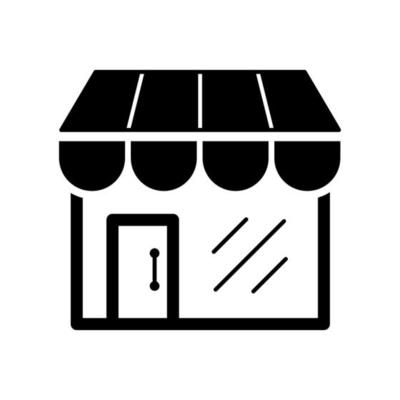
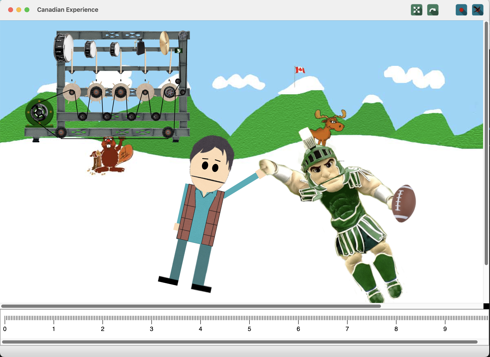

NFT MarketPlace
For my final exam assignemnt in CSE477,
I developed an interactive Non-Fungible Token trading marketplace build in pure HTML, CSS and JavaScript. This tool (in addition to my webpage)
highlight my ability to build beatiful and mobile-friendly front-end and back-end applications. Click here to see marketplace!

JavaScript Piano
As part of my first Homework assignemnt in CSE477,
I developed an interactive piano build in pure HTML, CSS and JavaScript. This tool (in addition to my webpage)
highlight my ability to build beatiful and mobile-friendly front-end applications. Click here to see piano and play!

Canadian Experience
This project serves as a strong demonstration of my Object-Oriented Programming skills and is divided into two parts.
Firstly, I implemented the 'Canadian Experience,' which comprises 33 classes. It encompasses various functionalities, including multiplayer support, video recording and saving, setting keyframes, and controlling two main characters: Harold and Sparty. Each character consists of multiple movable parts, including the head, body, two arms, and two legs. With this application, you can manipulate the characters and create your own movies! As for the second part, I've introduced 'Harold's Music Machine,' which comprises 20 classes. I seamlessly integrated the Music Machine into the Canadian Experience to add background music to our movies. This feature plays music in the background.